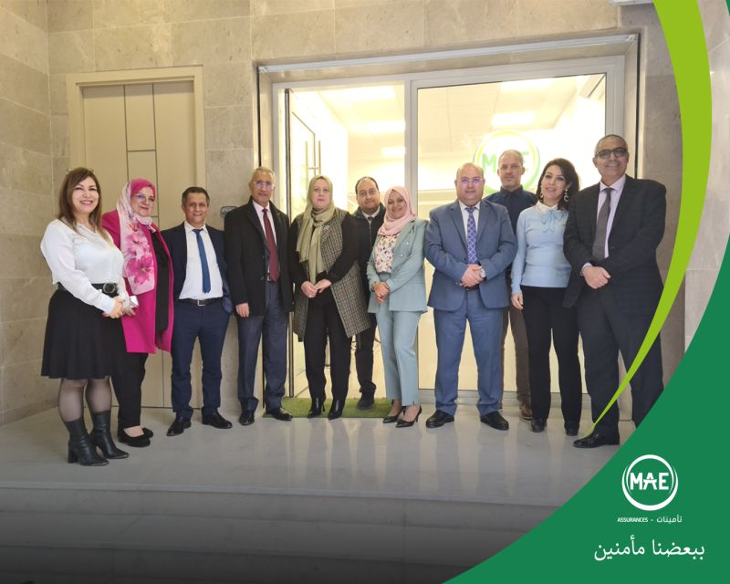
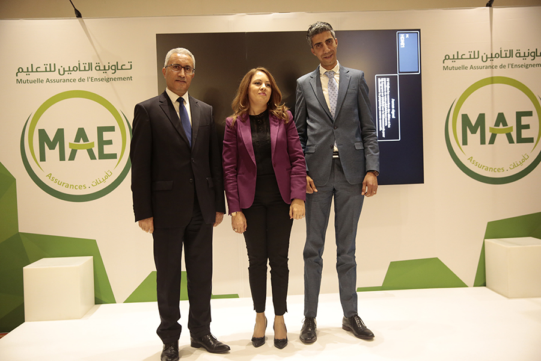

<!-- <section class="about">
    <h2>A propos de nous</h2>
    <div class="container">
        <p>
            La MAE (Mutuelle Assurance de l’Enseignement) est une compagnie tunisienne qui s’est spécialisée dans
            les contrats d’assurance destinés au corps éducatifs et à l’enseignement. C’est l’un des assureurs
            spécialisés les plus performants du pays.
            Forte de son expérience de plus de 60 ans, la compagnie a réussi à diversifier ses produits au fil des
            années. Elle fait également partie des compagnies les plus performantes sur le plan financier, mais
            aussi les plus engagées sur le plan sociétal. Décryptage.
            Avec son réseau de 42 agences, ses 57 succursales et ses 5 courtiers partenaires répartis dans toute la
            Tunisie, MAE est un acteur clé de son secteur en Tunisie, surtout si l’on prend en compte sa
            spécialisation. Fondée en 1962, la compagnie est une société mutualiste qui œuvre pour l’intérêt de la
            collectivité.
        </p>
    </div>
</section> -->

<div class="container my-5">
    <div class="row">
      <div class="col-md-6 pt-3">
        <small class="text-uppercase" style="color: #9B5DE5;">À propos</small>
        <h1 class="h2 mb-4" style="font-weight: 600;">À propos de<span style="color: #9B5DE5;"> Nous</span></h1>
        <p class="text-secondary" style="line-height: 2;"> La MAE (Mutuelle Assurance de l’Enseignement) est une compagnie tunisienne qui s’est spécialisée dans
            les contrats d’assurance destinés au corps éducatifs et à l’enseignement. C’est l’un des assureurs
            spécialisés les plus performants du pays.
            Forte de son expérience de plus de 60 ans, la compagnie a réussi à diversifier ses produits au fil des
            années. Elle fait également partie des compagnies les plus performantes sur le plan financier, mais
            aussi les plus engagées sur le plan sociétal. Décryptage.
            Avec son réseau de 42 agences, ses 57 succursales et ses 5 courtiers partenaires répartis dans toute la
            Tunisie, MAE est un acteur clé de son secteur en Tunisie, surtout si l’on prend en compte sa
            spécialisation. Fondée en 1962, la compagnie est une société mutualiste qui œuvre pour l’intérêt de la
            collectivité.</p>
      
      </div>
      <div class="col-md-6 text-center">
        <div class="row">
          <div class="col-md-6 mb-3">
            
          </div>
          <div class="col-md-6 mb-3">
            
          </div>
          
        </div>
      </div>
    </div>
  </div>
  
  
  
  
